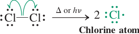
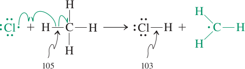
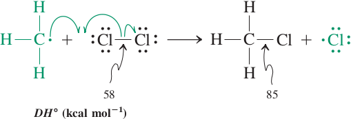
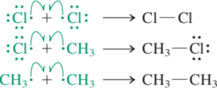

Halogenation of Alkanes
We studies, halogenration the electrophilic addition of HX and X2 to alkenes. They are also prepared by replacement of the −OH group of alcohols by halogen (Section 10.5). Many of the simpler, low-molecular-weight haloalkanes are prepared by the halogenation of alkanes. When methane and chlorine gas are mixed in the dark at room temperature, no reaction occurs. The mixture must be heated to a temperature above 300°C (denoted by Δ) or irradiated with ultraviolet light (denoted by hν) before a reaction takes place. One of the two initial products is chloromethane, derived from methane in which a hydrogen atom is removed and replaced by chlorine. The other product of this transformation is hydrogen chloride. Further substitution leads to dichloromethane (methylene chloride), CH2Cl2; trichloromethane (chloroform), CHCl3; and tetrachloromethane (carbon tetrachloride), CCl4. Why should this reaction proceed? Consider its ΔH°. Note that a C–H bond in methane (ΔH° = 105 kcal/mol) and a Cl – Cl bond (ΔH° = 58 kcal/mol) are broken, whereas the C – Cl bond of chloromethane (ΔH° = 85 kcal/mol) and an H – Cl linkage (ΔH° = 103 kcal/mol) are formed. The net result is ΔH° = energy input − energy output = ΣΔH° (bonds broken) − ΔH° (bonds formed) = = (105 + 58) − (85 + 103) = −25 kcal/mol (−105 kJ/mol). The release of 25 kcal/mol in forming stronger bonds: The reaction is exothermic (heat releasing).
| CH3−H | + | Cl−Cl | ⟶Δ or hν | CH3−Cl + H−Cl | ||
| ΔH° (kcal/mol) | 105 | 58 | 85 | 103 |
|---|
Why, then, does the thermal chlorination of methane not occur at room temperature? The fact that a reaction is exothermic does not necessarily mean that it proceeds rapidly and spontaneously. Remember (Section 2-1) that the rate of a chemical transformation depends on its activation energy, which in this case is evidently high.
By treating 2-methylpropane with bromine at an elevated temperature.
|  2-Methylpropane (Isobutane) | + Br2 | Δ or hν ⟶ |
 2-Bromo-2-methylpropane (tert-Butyl bromide) | + HBr |
Halogenation of alkanes is common with Br2 and Cl2. Fluorine, F2, is seldom used because its reactions with alkanes are so exothermic that they are diffi cult to control and can actually cause C−C bond cleavage and even explosions. Iodine, I2, is seldom used because the reaction is endothermic and the position of equilibrium favors alkane and I2 rather than iodoalkane and HI. If a mixture of methane and chlorine gas is kept in the dark at room temperature, no detectable change occurs.
If, however, the mixture is heated or exposed to light, a reaction begins almost at once with the evolution of heat. The products are chloromethane and hydrogen chloride. What occurs is a substitution reaction, in this case, substitution of a methane hydrogen atom by a chlorine atom and the production of an equivalent amount of hydrogen chloride.
| CH4 | + | Cl2 | Δ ⟶ | CH3Cl | + | HCl |
| Methane | Chloromethane Methyl chloride) |
If chloromethane is allowed to react with more chlorine, further chlorination produces a mixture of dichloromethane (methylene chloride), trichloromethane (chloroform), and tetrachloromethane (carbon tetrachloride). Notice that in the last equation, the reagent Cl2 is placed over the reaction arrow and the equivalent amount of HCl formed is not shown. Placing reagents over reaction arrows and omitting byproducts is commonly done to save space.
| CH3Cl | + | Cl2 | Δ ⟶ | CH2Cl2 | + | HCl |
| Chloromethane (Methyl chloride) | Dichloromethane (Methylene chloride) |
| CH2Cl2 | + | Cl2 | Δ ⟶ | CHCl3 | + | Cl2 | ⟶ | CCl4 | |
| Dichloromethane (Methylene chloride) | Trichloromethane (Chloroform) | Tetrachloromethane (Carbon tetrachloride) |
It is possible to prepare chloromethane or tetrachloromethane in relatively pure form by this reaction. In the case of chloromethane, a large excess of methane is used; for tetrachloromethane, a large excess of chlorine drives the reaction to complete halogenation. The other chlorinated methanes can be separated by distillation of partially chlorinated mixtures.
Treating ethane with bromine gives bromoethane (ethyl bromide).
| CH4 | + | Br2 | Δ ⟶ | CH3CH2Cl | + | HBr |
| Ethane | Bromoethane Ethyl bromide) |
In all cases, monosubstituted products are only obtained using an excess of ethane.
Regioselectivity
Treating propane with bromine gives a mixture consisting of approximately 92% of 2-bromopropane and 8% of 1-bromopropane:
CH3CH2CH3 + Br2 ⟶heatLight

(92%)
+

(8%)
Propane contains eight hydrogens; one set of six equivalent primary hydrogens and one set of two secondary hydrogens (Section 2.3D). The hydrogens in each set are equivalent because of rapid bond rotation about C−C single bonds. Substitution of bromine for a primary hydrogen gives 1-bromopropane; substitution of bromine for a secondary hydrogen gives 2-bromopropane. If there were random substitution of any one of the eight hydrogens in propane, we would predict that the isomeric bromopropanes would be formed in the ratio of 6:2, or 75% 1-bromopropane and 25% 2-bromopropane. In fact, in the bromination of propane, substitution of a secondary hydrogen rather than a primary hydrogen is strongly favored. 2-Bromopropane is the major product and the reaction is highly regioselective.
Mechanism of Halogenation of Alkanes
From detailed studies of the conditions and products for halogenation of alkanes, chemists have concluded that these reactions occur by a type of mechanism called a radical chain mechanism.
Formation of Radicals
Following are four reactions that result in homolytic cleavage to give radicals. Note that in the fi rst three cases the bond being broken is between atoms with at least 
ΔH° = +247 kJ/mol (+59 kcal/mol)
Experimental observation. Only a relatively small number of initiation events (e.g., photons of light) are necessary to enable a great many methane and chlorine molecules to undergo conversion into products.
Interpretation. After initiation has taken place, the subsequent steps in the mechanism are self-sustaining, or self-propagating; that is, they can occur many times without the addition of further chlorine atoms from the homolysis of Cl2. Two propagation steps fulfill this requirement. In the first step, a chlorine atom attacks methane by abstracting a hydrogen atom. The products are hydrogen chloride and a methyl radical.
Propagation step 1: Abstraction of an H atom by Cl
ΔH° = ΔH°(CH3 – H) − ΔH°(H– Cl) = +2 kcal/mol (+8 kJ/mol)
The ΔH° for this transformation is positive; it is endothermic (heat absorbing), and its equilibrium is slightly unfavorable.
Chloromethane is formed in the second propagation step. Here the methyl radical abstracts a chlorine atom from one of the starting Cl2 molecules, thereby furnishing chloromethane and a new chlorine atom. The latter reenters propagation step 1 to react with a new molecule of methane. Thus, one propagation cycle is closed, and a new one begins, without the need for another initiation step to take place. Note how exothermic propagation step 2 is, 227 kcal/mol. It supplies the overall driving force for the reaction of methane with chlorine.
ΔH° = ΔH°(Cl2) − ΔH°(CH3– Cl) = −27 kcal/mol (−113 kJ/mol)
Because propagation step 2 is exothermic, the unfavorable equilibrium in the first propagation step is pushed toward the product side by the rapid depletion of its methyl radical product in the subsequent reaction.
Experimental observation. Small amounts of ethane are identified among the products of chlorination of methane.
Interpretation. Radicals and free atoms are capable of undergoing direct covalent bonding with one another. In the methane chlorination process, three such combination processes are possible, one of which — the reaction of two methyl groups — furnishes ethane. The concentrations of radicals and free atoms in the reaction mixture are very low, however, and hence the chance of one radical or free atom fi nding another is small. Such combinations are therefore relatively infrequent. When such an event does take place, the propagation of the chains giving rise to the radicals or atoms is terminated. We thus describe these combination processes as termination steps.
